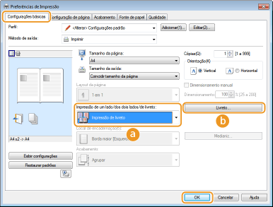
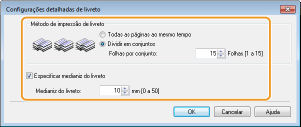

0KU8-01A
|
É possível imprimir duas páginas de um documento em ambos os lados do papel. Se o papel estiver dobrado no centro, um livreto é formato. O driver da impressora controla a ordem de impressão de tal modo que os números de páginas são corretamente dispostos.
|
|
|
|
A impressão de livreto pode não estar disponível para alguns tamanhos e tipos de papel. Papel
|
Guia [Configurações básicas]  Selecione [Impressão de livreto] em [Impressão de um lado/dos dois lados/de livreto] Clique em [Livreto] para especificar as configurações detalhadas conforme necessário [OK] [OK]
Selecione [Impressão de livreto] em [Impressão de um lado/dos dois lados/de livreto] Clique em [Livreto] para especificar as configurações detalhadas conforme necessário [OK] [OK]

 [Impressão de um lado/dos dois lados/de livreto]
[Impressão de um lado/dos dois lados/de livreto]Selecione [Impressão de livreto].

Para a [Impressão de um lado] e [Impressão dos dois lados], consulte Alternância entre impressão de um lado e impressão dos dois lados.
 [Livreto]
[Livreto]A tela mostrada abaixo aparece.

[Método de impressão de livreto]
|
[Todas as páginas ao mesmo tempo]
|
Imprime todas as páginas de uma vez como um único agrupamento. Você pode fazer um livreto simplesmente dobrado as páginas impressas ao meio.
|
|
[Dividir em conjuntos]
|
Selecione esta configuração quando há muitas páginas que não podem ser encadernadas de uma só vez. O número de folhas especificado em [Folhas por conjunto] está alocado para um único conjunto de impressão. Dobre os conjuntos menores, e depois colete-os para formar um livreto.
|
[Especificar medianiz do livreto]
Se estiver usando um grampeador ou outra ferramenta de encadernação, especifique a largura de margem para encadernar seu livreto. Marque a caixa de seleção [Especificar medianiz do livreto] e especifique a largura de margem em [Medianiz de livreto].